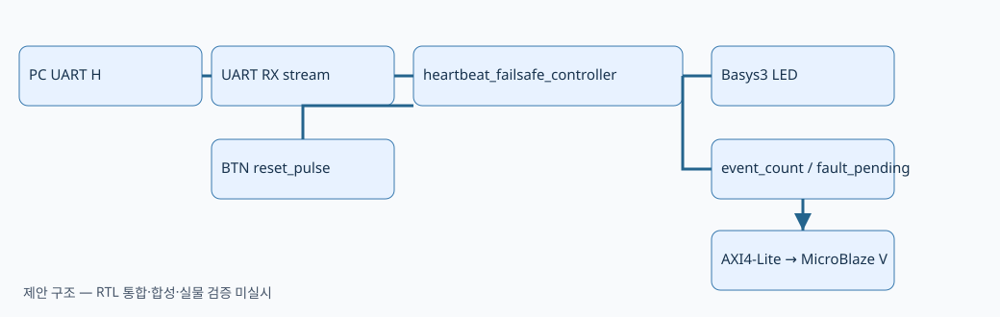

CAPSTONE-13 — UART 하트비트 감시·안전 정지 상태기
통신 단절을 감지해 LED 안전 상태를 유지하고 수동 복구하는 자체 설계형 프로젝트. 신규 RTL/보드 동작 미검증.
1. 시스템 블록도

입력: UART H(0x48), 버튼 reset_pulse → Controller: heartbeat_failsafe_controller → 출력: safe_led/fault_led 및 fault_pending/event_count.
신호 흐름 요약
BTN reset_pulse → heartbeat_failsafe_controller (수동 복구)
2. 부품·전원·안전
Basys3 내장 USB-UART·버튼·LED만 사용. 외부 5V, XADC, 모터·릴레이 사용 없음. 산업용 안전 인증 장치가 아닌 교육용 상태기.
3. 제어정책 및 FSM
| 상태 | 출력 | 전이 |
|---|---|---|
| WAIT_FIRST | LED 모두 OFF | H 수신 → RUN |
| RUN | safe_led ON | 1500ms 미수신 → FAULT |
| FAULT | fault_led ON, 이벤트 1회 기록 | reset_pulse → WAIT_FIRST |
타임아웃과 H 동시 발생 시 타임아웃 우선. FAULT에서 H만으로 자동 복귀 금지.
4. 신호표
| 신호 | 역할 |
|---|---|
clk / rst | 제안 인터페이스 · 자세한 폭/동작은 Markdown 참조 |
rx_out_data[7:0] | 제안 인터페이스 · 자세한 폭/동작은 Markdown 참조 |
rx_out_valid / rx_out_ready | 제안 인터페이스 · 자세한 폭/동작은 Markdown 참조 |
reset_pulse | 제안 인터페이스 · 자세한 폭/동작은 Markdown 참조 |
safe_led / fault_led | 제안 인터페이스 · 자세한 폭/동작은 Markdown 참조 |
fault_pending | 제안 인터페이스 · 자세한 폭/동작은 Markdown 참조 |
age_ms[15:0] | 제안 인터페이스 · 자세한 폭/동작은 Markdown 참조 |
event_count[15:0] | 제안 인터페이스 · 자세한 폭/동작은 Markdown 참조 |
5. 구현 순서·시험 시나리오
기존 UART RX 인터페이스 확인 → 1ms clock enable → FSM → self-checking TB → Top 연결 → AXI4-Lite → MicroBlaze V.
T01~T12: Reset, 최초 H, 연속 H, 1499ms/1500ms 경계, FAULT 래치, 수동 복구, 비-H 입력, 동시 이벤트, 카운터 포화, ready/valid 핸드셰이크.
6. 출처·검증 단계
기존 저장소 RTL 트랙 및 UART 주변장치 참고. 외부 공개 코드를 복제하지 않은 독립 설계이며 재배포 대상 외부 코드·이미지 없음.
설계 문서 작성 · RTL 시뮬레이션 미실시 · 합성/Timing 미실시 · 실물 보드 시험 미실시.
전체 설계서 · 기계 판독 메타데이터 · 구조도